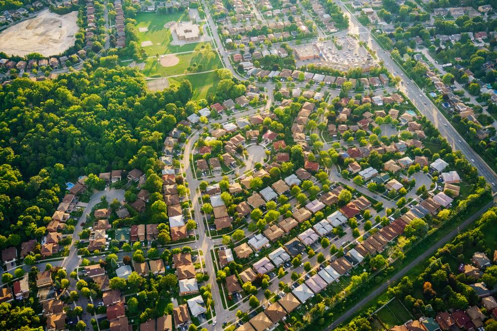

- 

Podemos hablar de contaminación cuando en un entorno ingresan elementos o sustancias que normalmente no deberían estar en él y que afectan el equilibrio del ecosistema. Los agentes contaminantes pueden ser físicos, químicos o biológicos y perjudican medios como el agua, el suelo o el aire.
Compartimos este interesante video sobre la contaminacion en el mundo contigo, para que puedas entender que se puede hacer(¡Con subtitulos!)
Estos componentes naturalmente no deberían estar en la atmósfera en tan elevadas concentraciones y por eso se puede decir que el aire está contaminado, o que el efecto invernadero se esté convirtiendo en un problema porque el planeta se está calentando más de lo normal. De hecho, si por un tiempo prolongado un ser vivo respira aire con un alto contenido de estas sustancias puede morir por envenenamiento.
El efecto invernadero es un fenomeno natural que permite la vida en la tierra manteniendo el calor del planeta gracias a una capa de gases, pero debido a la contaminacion esta se vuelve muy gruesa y calienta el planeta
Los humanos no somos los únicos seres que generamos contaminación. Algunas algas que crecen en los embalses o represas liberan toxinas que contaminan el agua. De igual forma, los volcanes son una fuente de contaminación natural. Cuando un volcán entra en erupción, en la atmósfera ingresan cenizas y altas concentraciones de azufre, hierro y otros minerales que afectan el medio ambiente.